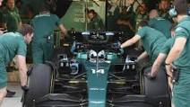

Historias recientes

F. Alonso rezuma optimismo
Fernando Alonso rezuma optimismo tras probar el Aston Martin en Jerez: "Este es un proyecto ganador"
Vinicius y Rodrygo al rescate
Vinicius y Rodrygo rescataron a un Real Madrid gris y le metieron en la final del Mundial de Clubes
Así es la nueva Superliga
Con estos cambios se busca también dar voz a aquellos quienes en un principio no vieron claro el funcionamiento.